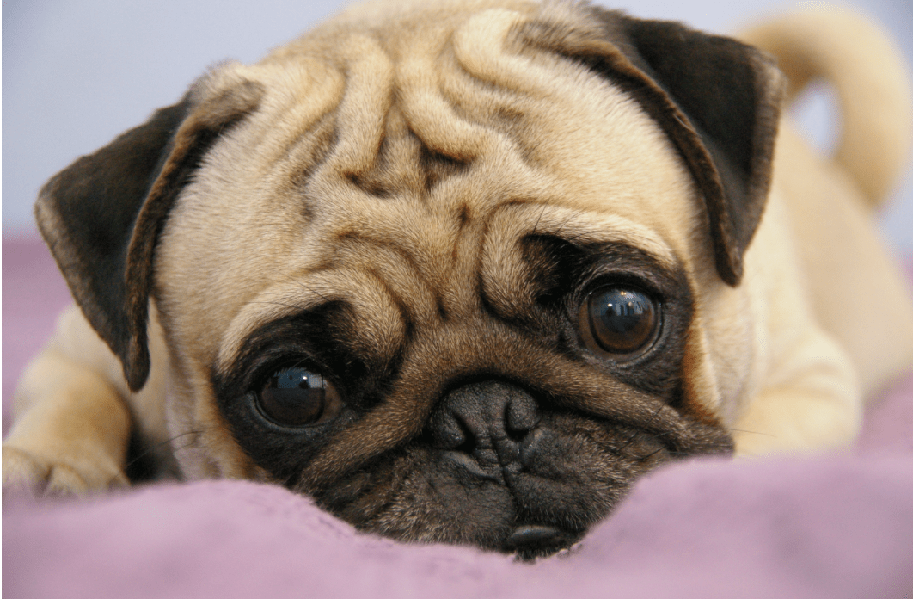
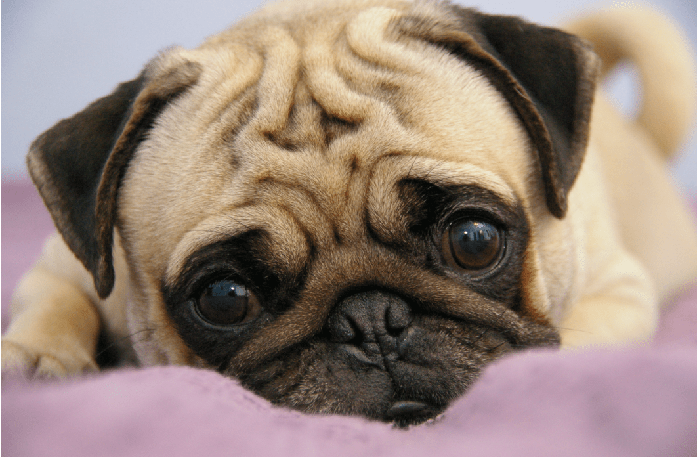

RAZAS MÁS POPULARES
 

HUSKY SIBERIANO
PASTOR ALEMÁN
BÓXER
PUG
WEIMARANER
BULLDOG INGLES
DÁLMATA
SCHNAUZER
CHIHUAHUA
CANICHE
YORKSHIRE TERRIER
LABRADOR RETRIEVER
CHOW CHOW
BOYERO DE BERNA
BEAGLE
ORIGEN: Estados Unidos de Norteamérica.
ORIGEN: Perro de trabajo para jalar trineos.
CLASIFICACIÓN FCI: Grupo 5 Perros tipo Spitz y tipo primitivo. Sección 1 Perros de trineo nórdicos. Sin prueba de trabajo.
APARIENCIA GENERAL: El Husky siberiano es un perro de trabajo de tamaño mediano, rápido y ligero. Su movimiento es libre y gracioso. Su cuerpo moderadamente compacto y bien cubierto de pelo, las orejas erguidas y la cola tupida con pelo de cepillo sugieren su herencia nórdica. Su andar característico es suave y aparentemente sin ningún esfuerzo. Lleva a cabo su función original de perro para jalar de la manera la más capaz, llevando una carga ligera a velocidad moderada a grandes distancias. Las proporciones y la forma de su cuerpo reflejan su equilibrio básico de poder, velocidad y resistencia. Los machos de la raza Husky siberiano son masculinos, pero nunca toscos; las hembras son femeninas pero sin manifestar debilidad en su estructura. En buenas condiciones de salud, con músculos firmes y bien desarrollados, el Husky siberiano no debe presentar un exceso de peso.
PROPORCIONES IMPORTANTES:
- Visto de perfil, la longitud del cuerpo desde la punta del hombro hasta la punta de la nalga es ligeramente mayor que la altura del cuerpo desde el piso a la cruz.
- La distancia desde la punta de la trufa al stop es igual a la distancia desde el stop al hueso occipital.
TEMPERAMENTO Y COMPORTAMIENTO: El temperamento característico del Husky siberiano es amigable y gentil, pero también alerta y extravertido. No manifiesta las cualidades posesivas del perro de guardia, ni tampoco es exageradamente sospechoso hacia los extraños o agresivo con otros perros. Se espera cierta reserva y dignidad en el perro adulto. Su inteligencia, docilidad y disposición para placer hacen de este perro un compañero agradable y un trabajador siempre dispuesto.
COLOR:Se permiten todos los colores desde el negro hasta el blanco puro. Es común una variedad de marcas en la cabeza, incluyendo muchos patrones llamativos no encontrados en otras razas.
TAMAÑO Y PESO: Altura a la cruz: Machos: 21 a 23,5 pulgadas hasta la cruz (53,5 - 60 cm), Hembras: 20 a 22 pulgadas hasta la cruz (50,5 - 56 cm).
Peso: Machos: 45 a 60 libras ingleses (20,5 - 28 kg), Hembras: 35 a 50 libras ingleses (15,5 - 23 kg).
El peso está en proporción a la altura. Las medidas mencionadas arriba representan los límites extremos de tamaño y peso sin dar preferencia a ninguno de los extremos. Cualquier apariencia de osamenta o peso excesivo debe ser penalizada.
HISTORIA: Es una raza antigua de tipo spitz emparentada con el lobo. Es originaria del extremo noreste del continente asiático, concretamente de la península de los tchukchos. Históricamente ha sido usado por los chukchi, koryak y kamchadal como perro de trabajo. Los chukchi hacían una selección muy estricta en cuanto a sus perros lo que permitió crear una raza muy definida y pura. Desde 1909 hasta 1930 hubo un trasvase de Husky de Siberia Oriental a Alaska hasta que las autoridades soviéticas cerraron la frontera. En el tiro de trineo son auténticos expertos. Se usaron históricamente para el arrastre pero empezaron su carrera deportiva ya en los años 20, alcanzando fama internacional en 1925 cuando en un tiempo récord lograron llevar el antídoto contra la difteria a Nome, Alaska, salvándola de una epidemia fatal. Desde entonces son usados para deportes de invierno y actualmente también para las nuevas modalidades de skijoring y el ski-pulka. Hoy en día es una raza muy popular en todo el mundo.
Grupo 1: Perros de pastor y perros boyeros.
Tamaño: Grande
Machos:
Altura a la cruz: 60 a 65 cm.
Peso: 30 a 40 kg.
Hembras:
Altura a la cruz: 55 a 60cm.
Peso: 22 a 32 kg.
Color: Negro, con marcas rojas parduzcas, marrón o amarillo a gris claro. Negro y gris unicolor, el gris es carbón, abrigo y máscara negra. Se toleran pequeñas manchas blancas discretas en el pecho o una coloración muy clara en el interior de las extremidades, pero no se desean. La trufa debe ser negra en todas las variedades de color. La ausencia de máscara, ojos claros y penetrantes, marcas claras o blanquecinas en el pecho y las extremidades internas, uñas de colores claros y la punta de la cola roja se penalizará como signos de pigmentación insuficientes. La capa interna es de color gris claro; El blanco no está permitido.
Comportamiento: En su comportamiento y carácter, el pastor alemán debe estar equilibrado, bien equilibrado, seguro de sí mismo, absolutamente natural, perfectamente inofensivo (excepto en el estado de excitación), alerta y dócil. Debe mostrar coraje, resistencia y confianza en sí mismo para cumplir con las condiciones que lo hacen apto para ser un perro de compañía, guardia, protección, servicio y protección de la manada.
Historia: El Pastor Alemán, cuya reproducción metódica comenzó con la fundación del club en 1899, fue seleccionado anteriormente de entre las variedades de perros pastores de Alemania Central y del Sur; El objetivo era crear un perro de utilidad altamente calificado. Para ello, se ha definido el pastor alemán estándar, que tiene en cuenta tanto las habilidades físicas como el carácter y el comportamiento del perro.
El pastor alemán es de tamaño mediano, ligeramente más largo que alto, poderoso y musculoso. El marco es seco y todo sólido.
ORIGEN: Alemania.
UTILIZACIÓN: Perro de compañía, protección y servicio.
CLASIFICACIÓN FCI: Grupo 2 Perros tipo Pinscher y Schnauzer, Molosoides Tipo Montaña y boyeros suizos y otras razas. Sección 2.1 Molosoides– tipo Dogo. Con prueba de trabajo.
APARIENCIA GENERAL: El Boxer es un perro de tamaño mediano, de pelo liso, fuerte, con una estructura corta y cuadrada y huesos fuertes. Su musculatura es seca, fuertemente desarrollada y en relieve. Sus movimientos son vivaces, llenos de fuerza e hidalguía. El Boxer no debe parecer tosco, pesado o liviano.
PROPORCIONES IMPORTANTES:
* Largo del cuerpo: Altura a la cruz: su estructura es cuadrada, esto significa que las líneas delimitantes, una horizontal del dorso y dos verticales, una que toca la punta del hombro y otra la punta de isquión forman un cuadrado.
* Profundidad de pecho: Altura a la cruz: el pecho llega hasta los codos. La profundidad de pecho corresponde a la mitad de la altura a la cruz.
* Largo del hocico: largo de la cabeza: el largo del hocico en relación al largo del cráneo es de 1:2 (medido desde la punta de la nariz hasta el ángulo interior del ojo y desde el ángulo interior del ojo al occipucio respectivamente).
COMPORTAMIENTO/TEMPERAMENTO:
El Boxer debe tener nervios fuertes, ser seguro de sí mismo, tranquilo y equilibrado. Su carácter es de máxima importancia y requiere de una atención especial. Su apego y lealtad hacia su amo y a todo su entorno, su vigilancia y valentía como defensor son conocidos desde la antigüedad. Es inofensivo con su entorno pero desconfiado ante los extraños, alegre y gracioso durante el juego pero temible en los momentos serios. Es fácil de educar gracias a su predisposición a ser obediente, su brío y valor, su agudeza natural y su buen olfato. Por no ser pretencioso y ser un perro limpio por naturaleza hace que sea agradable y valioso para la familia como perro de guardia, compañía y servicio. Su carácter es íntegro, no es falso ni rencoroso aún a edad avanzada.
COLOR: Leonado o atigrado. El leonado puede tener diferentes tonalidades, desde un leonado claro hasta un rojo ciervo oscuro, sin embargo las tonalidades intermedias son las más lindas (leonado rojizo). Máscara negra. La variedad atigrada tiene sobre una base leonada, en las coloraciones antes mencionadas, líneas oscuras o negras en dirección a las costillas. El color base y las líneas deben diferenciarse claramente entre sí. Las manchas blancas no deben desecharse ya que también pueden considerarse atractivas.
TAMAÑO: Medido desde la cruz, pasando por los codos, hasta el piso.
Machos: 57 – 63 cm.
Hembras: 53 – 59 cm.
PESO: Machos: Más de 30 Kg. (con una altura a la cruz de aproximadamente 60 cm).
Hembras: Aproximadamente 25 Kg. (con una altura aproximada de 56 cm).
ORIGEN: China.
UTILIZACIÓN: Perro de compañía.
CLASIFICACIÓN FCI: Grupo 9 Perros de compañía. Sección 11 Molosoides de talla pequeña. Sin prueba de trabajo.
BREVE RESUMEN HISTÓRICO: Existen ciertas conjeturas sobre el origen de esta raza que parece ser que ha llegado desde oriente. Su país de origen es catalogado como China, dónde perros de nariz respingada eran privilegiados. Encontró su camino hacia Europa con los comerciantes de Dutch East India Company y ya en el 1500 eran admirados en los Países Bajos. De hecho, el Pug comenzó a ser el símbolo de los patriotas de la realeza. El Pug llegó a Inglaterra cuando William III asumió al trono. Hasta 1877, la raza solo era vista de color leonado pero en ese año una pareja de color negro fue introducida desde oriente.
ASPECTO GENERAL: Es indudablemente un perro cuadrado y regordete, "multum in parvo" (mucha sustancia en pequeño espacio) que lo muestra en su estructura compacta, sus proporciones bien construidas y la dureza de sus músculos pero nunca debe parecer de extremidades cortas, ni magro o “patilargo”.
PROPORCIONES IMPORTANTES: Definitivamente cuadrado y compacto.
TEMPERAMENTO/COMPORTAMIENTO: Gran encanto, dignidad e inteligencia. Equilibrado, alegre y vivaz.
COLOR: Plata, albaricoque, leonado claro o negro. Cada uno de estos colores debe estar claramente definido para subrayar el contraste entre el color, la estría (una línea negra que se extiende desde el occipucio hasta la cola) y la máscara. Las marcas tienen que estar bien definidas. El hocico o la máscara, las orejas, los lunares en las mejillas, la marca del pulgar o el rombo de la frente y la estría deben ser lo más negro posible.
TAMAÑO Y PESO: El peso ideal es entre 6,3 y 8,1 kg. Debe tener fuerte musculatura, pero la sustancia no debe ser confundida con un sobrepeso.
ALTURA: 25-30 cm
ORIGEN: Alemania.
UTILIZACIÓN: De acuerdo con su propósito de caza como un perro de caza versátil, el Weimaraner debe poseer todos los talentos que se le exigen, y poder ser utilizado para todos los trabajos en campo, madera y agua, de una manera orientada al rendimiento, antes y después. el disparo.
CLASIFICACIÓN FCI: Grupo 7 Perros de muestra. Sección 1.1 Perros de muestra continentales, tipo "Braque". Con prueba de trabajo.
BREVE RESUMEN HISTÓRICO: Existen numerosas teorías sobre el origen del Weimar Dog Polar. Solo es cierto: el Weimaraner, que en ese momento todavía contenía una gran cantidad de liam hound blood («Leithund») ya estaba en la corte de Weimar en el primer tercio del siglo XIX. A mediados del siglo XIX, antes de que comenzara la reproducción pura, la cría estaba principalmente en manos de cazadores profesionales y guardabosques en el centro de Alemania, principalmente en las regiones alrededor de Weimar y en Turingia.
A medida que pasaban los días de los perros de caza, los perros se cruzaron con el «Hühnerhund» y la cría continuó con esta cruz. A partir de 1890 aproximadamente, la raza se produjo de acuerdo con un plan y se consideró adecuada para el registro en un libro genealógico. Aparte de la de pelo corto Weimaraner, una variedad de pelo largo ocurrió, aunque solo sea, desde principios del siglo XX. Desde que fue admitido en el libro de estudios, el Weimaraner ha sido puramente criado, permaneciendo mayormente libre de cruces con otras razas, en particular, Punteros. Por lo tanto, es probable que Weimaraner sea la raza alemana más "apuntadora", que se ha criado en forma pura desde 1900.
ASPECTO GENERAL: Perro de caza mediano a grande. Tipo funcional de trabajo, agradable en forma, musculoso y muy musculoso. Diferencia en el tipo entre perros y perras fácilmente distinguibles.
PROPORCIONES IMPORTANTES: Longitud del cuerpo a la altura a la cruz aproximadamente 12: 11. Proporciones de la cabeza; desde la punta de la nariz hasta un poco más largo que desde la parada hasta el occipital. La distancia desde el codo al medio de la linterna y la distancia desde el codo al punto de la cruz casi igual.
TEMPERAMENTO/COMPORTAMIENTO: Perro de caza versátil, fácil de entrenar, estable y apasionado. Persevera en la búsqueda sistemática, pero no demasiado animada. Capacidad notable para recoger el olor. Listo para apoderarse del juego y otras presas; Es un buen perro guardián, sin embargo, sin agresividad. Fiable señalador perro y trabajador en agua. Increíble inclinación al trabajo tras el disparo.
COLOR: Plata, hueva o ratón gris, así como tonos de estos colores. Cabeza y pieles en general ligeramente más pálidos. Sólo se permiten pequeñas marcas blancas en el pecho y los dedos de los pies. A veces una traza más o menos definida ocurre a lo largo de la espalda.
TAMAÑO Y PESO: Altura a la cruz: Machos: 59 - 70 cm. Hembras: 57 - 65 cm.
Peso: Machos: unos 30 - 40 kg. Hembras: unos 25 - 35 kg.
ORIGEN: Gran Bretaña.
UTILIZACIÓN: Perro de compañía y de disuasión.
CLASIFICACIÓN FCI: Grupo 2 Perros tipo Pinscher y Schnauzer - Molosoides y perros tipo de montaña y boyeros suizos. Sección 2.1 Molosoides, tipo Dogo. Sin prueba de trabajo.
BREVE RESUMEN HISTÓRICO: El Bulldog, primero fue clasificado como tal en 1630 por su anterior mención de tipo similar referido a un bandog, término utilizado en la actualidad para los perros de pelea. Utilizado originalmente para la pelea con toros, el Bulldog peleó su camino y a partir de 1835 comenzó a desarrollarse en una versión de cara más corta y más rechoncho a lo que conocemos actualmente. Ingresó en las pistas de exposición en 1860 y en los siguientes años mostró un gran cambio de personalidad. Un perro deliciosamente feo con expresión de pugilista que demuestra cariño, de naturaleza afectiva hacia la familia y amigos. Una de las razas autóctonas más antiguas conocida como el Perro Nacional de Gran Bretaña y asociado a todo el mundo con determinaciones británicas y el legendario John Bull.
ASPECTO GENERAL: Es un perro de pelo corto, algo pesado, más bien bajo en estatura, ancho, poderoso y compacto. Cabeza más bien grande en proporción a su tamaño, pero ninguna parte de su cuerpo debe tener un tamaño excesivo en relación a las otras, rompiendo así la simetría general, haciendo ver al perro deforme o interfiriendo con su capacidad de movimiento. Cara relativamente corta, hocico ancho, romo e inclinado levemente hacia arriba aunque no muy excesivo. Perros mostrando problemas respiratorios son altamente indeseables. Cuerpo algo corto, de buena estructura. Miembros fuertes, bien musculados y robustos sin tendencia a obesidad. Posterior alto y fuerte. Hembras no tan desarrolladas como los machos.
COMPORTAMIENTO/TEMPERAMENTO: Debe dar la impresión de determinación, fuerza y actividad. Alerta, valiente, leal, dependiente, valeroso, feroz en apariencia, pero poseedor de una naturaleza afectiva.
COLOR: Sólido o tiznado, (es decir un solo color con hocico o máscara negra). Unicolores (que deben ser brillantes y puros de su tipo) como atigrados, rojos en sus varios tonos, bayos, leonados etc., blancos y partidos (es decir la combinación de blanco con cualquiera de los colores anteriormente mencionados). Color carne, negro y fuego son altamente indeseables.
TAMAÑO Y PESO: Altura macho: De 30 a 40 Cm. Peso macho: De 24 a 25 Kg.
Altura hembra: De 30 a 40 Cm. Peso hembra: De 22 a 23 Kg.
ORIGEN: Croacia.
UTILIZACIÓN: Perro de caza. Perro de compañía, de familia, fácil a entrenar para fines diversos.
CLASIFICACIÓN FCI: Grupo 6 Perros tipo sabueso, perros de rastro (exceptuando lebreles) y razas semejantes. Sección 3 Razas semejantes. Sin prueba de trabajo.
BREVE RESUMEN HISTÓRICO: El origen del Dálmata puede ser reconocido en pinturas y crónicas eclesiásticas del siglo 16 a 18. Se pueden encontrar Dálmatas en las pinturas del altar “María con Jesús y los Ángeles” en la iglesia “Gospa od andjela” en la ciudad de Veli Losinj, isla de Losinj en Croacia que datan de 1600 – 1630 y también en frescos en Zaostrog, Dalmacia, Croacia. Esto sugiere que el origen del Dálmata es en la región mediterránea de este y en particular la histórica provincia de Dalmacia.
Las primeras descripciones de los Dálmatas se encuentran en la diócesis Djakovo, en Croacia, a saber, en las crónicas de la iglesia del obispo Petar Bakic del año 1719 y las crónicas eclesiásticas de Andreas Keczkemety del año 1737. El perro era denominado con el nombre en latín “Canis Dalmaticus” y la altura se describe de 4 – 5 “Spithamus”. Thomas Pennant describe esta raza en su obra “Sinopsis de los cuadrúpedos” del año 1771, como muy independiente, la llama “Dalmatian” y escribe sobre sus orígenes en Dalmacia. Un trabajo de Thomas Bewick, publicado en 1790 se refiere a esta raza como “Dámlata o perro de coche”. El primer estándar no oficial del Dálmata fue escrito por un inglés de nombre Vero Shaw en el año 1882.
Luego de la formación del Club del Dálmata de Inglaterra en el año 1890, este estándar se convirtió en el primer estándar oficial de la raza. La FCI publicó el primer estándar oficial de la raza el 7 de Abril de 1955 bajo el nombre “Perro de caza Dálmata”
APARIENCIA GENERAL: Mesocefálico. Cabeza en forma de prisma con orejas colgantes. El cuerpo es rectangular, fuerte, musculoso y particularmente moteado. El movimiento debe ser elegante. Las diferencias de sexo deben ser visibles.
PROPORCIONES IMPORTANTES: Largo del cuerpo: Altura a la cruz = 10:9. Altura a la articulación del codo: 50 % de la altura a la cruz. Altura del corvejón: 20-25% de la altura a la cruz. Largo de la cabeza: aproximadamente 40 % de la altura a la cruz. Largo del cráneo: largo del hocico = 1:1
TEMPERAMENTO/COMPORTAMIENTO: Temperamento agradable, amigable, ni tímido ni inseguro, libre de nerviosismo y agresividad. Alegre, leal, independiente y fácil de entrenar. Al Dálmata le gusta el agua y la actividad en el exterior. Tiene un marcado instinto de sabueso.
COLOR: El color de fondo es blanco puro. Variedad moteada de negro con manchas negras, la variedad moteada de hígado con manchas color marrón. El moteado debe ser simétrico, ubicado sobre todo el cuerpo, claramente definido sin entremezclarse con el color blanco base.
TAMAÑO Y PESO: Altura a la cruz: Machos: 56 – 62 cm. Hembras: 54 – 60 cm. Perros con excelente tipicidad y balance no deben ser penalizados por estar sobre el límite superior.
PESO:18-27 kg
ORIGEN: Alemania.
UTILIZACIÓN: Guardia y compañía.
CLASIFICACIÓN: Grupo 2 Perros tipo Pinscher y Schnauzer- MolosoidesPerros tipo montaña y Boyeros suizos. Sección 1 Pinscher y Schnauzer. Sin prueba de trabajo.
BREVE RESUMEN HISTÓRICO: En sus comienzos el Schnauzer fue utilizado en el sur del territorio alemán como perro de establo dada su buena relación con los caballos. Con celo acechaba la presencia de cualquier roedor y luego inmediatamente lo mataba, por lo cual desde muy temprana época fue llamado ratonero por el pueblo. En la fundación del Club del Pinscher-Schnauzer en el año 1895 fue inscripto como Pinscher de capa áspera.
ASPECTO GENERAL: Tamaño medio, vigoroso, más compacto que delgado, de pelo áspero.
PROPORCIONES IMPORTANTES:
Construcción cuadrada, donde la altura a la cruz se corresponde más o menos con el largo del cuerpo.
El largo de la cabeza (de la punta de la trufa a la protuberancia occipital) se relaciona al largo del cuerpo (medido de la cruz a la inserción de la cola) aproximadamente en una proporción de 1:2.
TEMPERAMENTO Y COMPORTAMIENTO: Sus rasgos típicos son su temperamento seguro y su circunspecta tranquilidad. Especialmente remarcable es su buen carácter, su alegría por los juegos y su apego proverbial a su amo. Ama mucho a los niños, es insobornable guardián, aunque no barullento. Órganos de los sentidos altamente desarrollados, prudencia, gran capacidad para ser educado, intrepidez, perseverancia y gran poder de recuperación rápida frente a las enfermedades y cambios de clima, le dan al Schnauzer todos los supuestos que un perro de utilidad debe tener para ser un magnífico perro de familia, de compañía y utilidad.
COLOR:
*Negro puro con lanilla interior negra
*Sal y pimienta
Para los sal y pimienta el objetivo de la cría es obtener un tono medio con igual distribución de color pimienta bien pigmentado con lanilla interior gris. Se admiten tonalidades que van desde el oscuro gris acerado hasta el gris plata. Todos los colores deben tener una máscara oscura que subraya la expresión y está en armonía con el color de la tonalidad respectiva. Manchas blancas en la cabeza, en el pecho o en los miembros no son deseadas.
TAMAÑO Y PESO: ALTURA A LA CRUZ:
Machos y hembras: 45 hasta 50 cm.
PESO: Machos y hembras: 14 hasta 20 kg.
Directamente desde México, el chihuahua se lleva el título de ser la raza de perro más pequeña del mundo, y en la actualidad parece haberse convertido en el nuevo perrito faldero por excelencia. Suelen ser cariñosos y hasta celosos con sus amos, a quienes gustan de acompañar a todos lados. Debido a su tamaño, el chihuahua es una raza frágil, que requerirá de entrenamiento para fortalecerse. Padecen deformaciones en la cadera de forma genética, y son propensos a sufrir de epilepsia.
Es conocido como caniche o poodle y es originario de Francia, donde ya en el siglo XV era muy popular entre los miembros de la realeza. Actualmente, el amor por los poodle se ha vuelto casi un furor, hasta tal punto que incluso se podría decir que es una de las razas más consentidas. Su tamaño compacto y su adorable apariencia son sus mayores atractivos. El caniche es un perro saludable, aunque es propenso a sufrir ciertas enfermedades menores, como la otitis.
Traído desde Escocia, el yorkshire terrier es una raza de pequeño tamaño, peluda y apariencia dulce, ideal para personas que viven en departamentos o espacios reducidos. No te dejes engañar por su talla: en la antigüedad se especializaba en la caza de ratones, e incluso hoy en día se trata de una raza territorial, que defenderá su espacio con fuertes ladridos y mordiscos si es necesario. Pueden vivir hasta 20 años, aunque con regularidad sufren de trastornos cardíacos, problemas digestivos, cataratas, entre otros.
El labrador retriever es una raza canina originaria de Terranova, en la actual Canadá. Los labradores se reconocen fácilmente por su cabeza ancha, orejas caídas y ojos grandes y expresivos. Dos características del labrador son su doble capa de pelo grueso pero bastante corto, muy resistente al agua, y la conocidísima "cola de nutria"
Este peludo amigo pertenece a una de las razas más antiguas del continente asiático. Se desarrolló en China y fue empleado como perro guardián y de caza. Una importante característica es su lengua azul. Se sabe que eran apreciados por los emperadores y vivían en los palacios, pero también en las montañas de Mongolia, donde cuidaban a los rebaños. Su pelaje es de distintos colores que van del blanco a los tonos cafés.
El boyero de Berna es una raza de perro boyero muy versátil que se originó en el Cantón de Berna, Suiza. Se trata de un moloso macizo, con una altura aproximada de 70 cm a la cruz y un peso, si es macho, que ronda los 48-51 kg y, si es hembra, los 46-49 kg. Se caracteriza por sus colores negro, marrón y blanco.
Originado del Reino Unido, el beagle es una raza de perro antigua, cuyos orígenes se pueden remontar a 2000 años atrás, aunque las características que tiene hoy en día se desarrollaron en el suelo inglés durante el siglo XIX. Debido a su inteligencia y a su gran sentido del olfato, en la actualidad el beagle sigue siendo una de las razas preferidas a la hora de armar equipos de rescate, sobre todo en zonas montañosas. En esta raza son comunes los problemas de epilepsia, la obesidad y la displasia de la cadera.